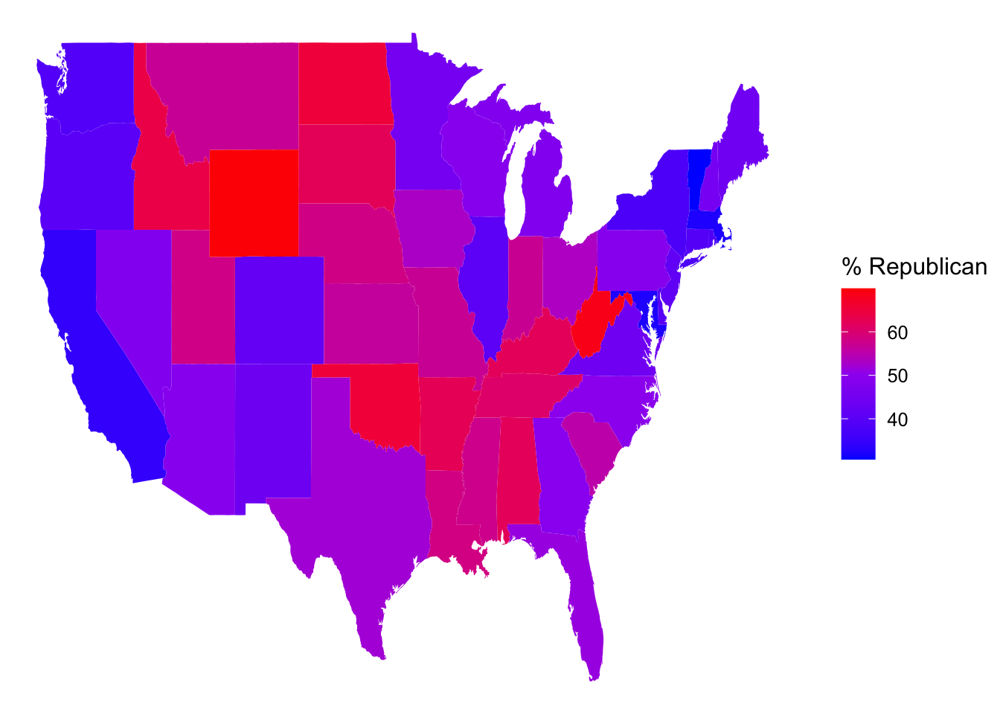

# Load tidyverse package for plotting and wranglinglibrary(tidyverse)# Import the data and only keep 2 addressesenergy <-read.csv("https://mac-stat.github.io/data/MacNaturalGas.csv") |>mutate(date =as.Date(paste0(month, "/1/", year), "%m/%d/%Y")) |>filter(address !="c")# Check it outhead(energy)
month year price therms hdd address renovated date
1 6 2005 35.21 21 0 a no 2005-06-01
2 7 2005 37.37 21 0 a no 2005-07-01
3 8 2005 36.93 21 3 a no 2005-08-01
4 9 2005 62.36 39 61 a no 2005-09-01
5 10 2005 184.15 120 416 a no 2005-10-01
6 11 2005 433.35 286 845 a no 2005-11-01
str(energy)
'data.frame': 78 obs. of 8 variables:
$ month : int 6 7 8 9 10 11 12 1 2 3 ...
$ year : int 2005 2005 2005 2005 2005 2005 2005 2006 2006 2006 ...
$ price : num 35.2 37.4 36.9 62.4 184.2 ...
$ therms : int 21 21 21 39 120 286 443 367 473 356 ...
$ hdd : int 0 0 3 61 416 845 1403 1123 1253 967 ...
$ address : chr "a" "a" "a" "a" ...
$ renovated: chr "no" "no" "no" "no" ...
$ date : Date, format: "2005-06-01" "2005-07-01" ...
#What was range in, and typical, energy used each month, as measured by therms? How does this differ by address?ggplot(energy,aes(x=therms, fill= address)) +geom_density(alpha=0.5)
#How did energy use (therms) change over time (date) at the two addresses?ggplot(energy,aes(y=therms, x= date, color= address )) +geom_point()
#How did the typical energy use (therms) at the two addresses change before and after they were renovated?ggplot(energy,aes(y=therms, x= date, color= address )) +geom_line()
fave_places <-read.csv("https://hash-mac.github.io/stat112site-s25/data/our_fave_places.csv")# Check it outhead(fave_places)
# Load the leaflet packagelibrary(leaflet)# Just a plotting frameleaflet(data = fave_places)
# We have a map nowleaflet(data = fave_places) |>addTiles()
# Now what do we have?# longitude and latitude refer to the variables in our dataleaflet(data = fave_places) |>addTiles() |>addMarkers(lng=~longitude, lat =~latitude)
# Since we named them "longitude" and "latitude", the function# automatically recognizes these variables. No need to write them!#Can only zoom intil names stop showing leaflet(data = fave_places) |>addTiles() |>addMarkers()
# Load package needed to change colorlibrary(gplots)# We can add colored circles instead of markers at each locationleaflet(data = fave_places) |>addTiles() |>addCircles(color =col2hex("red"))
# We can change the background# Mark locations with yellow dots# And connect the dots, in their order in the dataset, with green lines# (These green lines don't mean anything here, but would if this were somebody's travel path!)leaflet(data = fave_places) |>addProviderTiles("USGS") |>addCircles(weight =10, opacity =1, color =col2hex("yellow")) |>addPolylines(lng =~longitude,lat =~latitude,color =col2hex("green") )
# Don't worry about the syntaxstarbucks_mn <- starbucks |>filter(Country =="US", State.Province =="MN")
# Load the leaflet packagelibrary(leaflet)# Just a plotting frameleaflet(data = starbucks_mn) |>addTiles() |>addMarkers()
#It is hard to identify a pattern ggplot(starbucks, aes(x=Latitude, y=Longitude)) +geom_point()
# Load the packagelibrary(rnaturalearth)# Get info about country boundaries across the world# in a "sf" or simple feature formatworld_boundaries <-ne_countries(returnclass ="sf")
# What does this code produce?# What geom are we using for the point map?ggplot(world_boundaries) +geom_sf()
# Load package needed to change map themelibrary(mosaic)# Add a point for each Starbucks# NOTE: The Starbucks info is in our starbucks data, not world_boundaries# How does this change how we use geom_point?!ggplot(world_boundaries) +geom_sf() +geom_point(data = starbucks,aes(x = Longitude, y = Latitude),alpha =0.3, size =0.2, color ="darkgreen" ) +theme_map()
# We'll learn this syntax soon! Don't worry about it now.starbucks_cma <- starbucks |>filter(Country %in%c('CA', 'MX', 'US'))
cma_boundaries <-ne_states(country =c("canada", "mexico", "united states of america"),returnclass ="sf")
# Just the boundariesggplot(cma_boundaries) +geom_sf()
# Add the points# And zoom inggplot(cma_boundaries) +geom_sf() +geom_point(data = starbucks_cma,aes(x = Longitude, y = Latitude),alpha =0.3,size =0.2,color ="darkgreen" ) +coord_sf(xlim =c(-179.14, -50)) +theme_map()
#contour map of the large country # What changed in the plot?# What changed in our code?!ggplot(cma_boundaries) +geom_sf() +geom_density_2d( # This is not geom point data = starbucks_cma,aes(x = Longitude, y = Latitude),size =0.2,color ="darkgreen" ) +coord_sf(xlim =c(-179.14, -50), ylim =c(14.54, 83.11)) +theme_map()
# Get the latitude and longitude coordinates of state boundariesstates_map <-map_data("state")# Check it outhead(states_map)
long lat group order region subregion
1 -87.46201 30.38968 1 1 alabama <NA>
2 -87.48493 30.37249 1 2 alabama <NA>
3 -87.52503 30.37249 1 3 alabama <NA>
4 -87.53076 30.33239 1 4 alabama <NA>
5 -87.57087 30.32665 1 5 alabama <NA>
6 -87.58806 30.32665 1 6 alabama <NA>
# Note where the dataset, elections_by_state, is used# Note where the background map, states_map, is usedggplot(elections_by_state, aes(map_id = state_name, fill = repub_pct_20)) +geom_map(map = states_map) +expand_limits(x = states_map$long, y = states_map$lat) +theme_map()
# Make it nicer!ggplot(elections_by_state, aes(map_id = state_name, fill = repub_pct_20)) +geom_map(map = states_map) +expand_limits(x = states_map$long, y = states_map$lat) +theme_map() +scale_fill_gradientn(name ="% Republican", colors =c("blue", "purple", "red"), values = scales::rescale(seq(0, 100, by =5)))

ggplot(elections_by_state, aes(map_id = state_name, fill = repub_20_categories)) +geom_map(map = states_map) +expand_limits(x = states_map$long, y = states_map$lat) +theme_map()
# Load package needed for refining color palettelibrary(RColorBrewer)# Now fix the colorsggplot(elections_by_state, aes(map_id = state_name, fill = repub_20_categories)) +geom_map(map = states_map) +expand_limits(x = states_map$long, y = states_map$lat) +theme_map() +scale_fill_manual(values =rev(brewer.pal(8, "RdBu")), name ="% Republican")
# Get only the starbucks data from the USstarbucks_us <- starbucks |>filter(Country =="US")# Map itggplot(elections_by_state, aes(map_id = state_name, fill = repub_20_categories)) +geom_map(map = states_map) +geom_point(data = starbucks_us,aes(x = Longitude, y = Latitude),size =0.05,alpha =0.2,inherit.aes =FALSE ) +expand_limits(x = states_map$long, y = states_map$lat) +theme_map() +scale_fill_manual(values =rev(brewer.pal(8, "RdBu")), name ="% Republican")
# Get the latitude and longitude coordinates of county boundarieslibrary(socviz)data(county_map) # Check it outhead(county_map)
# Add 0's at the beginning of any fips_code that's fewer than 5 numbers long# Don't worry about the syntaxelections_by_counties <- elections_by_counties |>mutate(county_fips =as.character(county_fips)) |>mutate(county_fips =ifelse(nchar(county_fips) ==4, paste0("0", county_fips), county_fips))
ggplot(elections_by_counties, aes(map_id = county_fips, fill = repub_20_categories)) +geom_map(map = county_map) +scale_fill_manual(values =rev(brewer.pal(10, "RdBu")), name ="% Republican") +expand_limits(x = county_map$long, y = county_map$lat) +theme_map() +theme(legend.position ="right") +coord_equal()
---title: "Spatial Viz"number-sections: trueexecute: warning: falsefig-env: 'figure'fig-pos: 'h'fig-align: centercode-fold: false---```{r}# Load tidyverse package for plotting and wranglinglibrary(tidyverse)# Import the data and only keep 2 addressesenergy <-read.csv("https://mac-stat.github.io/data/MacNaturalGas.csv") |>mutate(date =as.Date(paste0(month, "/1/", year), "%m/%d/%Y")) |>filter(address !="c")# Check it outhead(energy)``````{r}str(energy)``````{r}#What was range in, and typical, energy used each month, as measured by therms? How does this differ by address?ggplot(energy,aes(x=therms, fill= address)) +geom_density(alpha=0.5)``````{r}#How did energy use (therms) change over time (date) at the two addresses?ggplot(energy,aes(y=therms, x= date, color= address )) +geom_point() ``````{r}#How did the typical energy use (therms) at the two addresses change before and after they were renovated?ggplot(energy,aes(y=therms, x= date, color= address )) +geom_line()``````{r}fave_places <-read.csv("https://hash-mac.github.io/stat112site-s25/data/our_fave_places.csv")# Check it outhead(fave_places)``````{r}# Load the leaflet packagelibrary(leaflet)# Just a plotting frameleaflet(data = fave_places)``````{r}# We have a map nowleaflet(data = fave_places) |>addTiles()``````{r}# Now what do we have?# longitude and latitude refer to the variables in our dataleaflet(data = fave_places) |>addTiles() |>addMarkers(lng=~longitude, lat =~latitude)``````{r}# Since we named them "longitude" and "latitude", the function# automatically recognizes these variables. No need to write them!#Can only zoom intil names stop showing leaflet(data = fave_places) |>addTiles() |>addMarkers()``````{r}# Load package needed to change colorlibrary(gplots)# We can add colored circles instead of markers at each locationleaflet(data = fave_places) |>addTiles() |>addCircles(color =col2hex("red"))``````{r}# We can change the background# Mark locations with yellow dots# And connect the dots, in their order in the dataset, with green lines# (These green lines don't mean anything here, but would if this were somebody's travel path!)leaflet(data = fave_places) |>addProviderTiles("USGS") |>addCircles(weight =10, opacity =1, color =col2hex("yellow")) |>addPolylines(lng =~longitude,lat =~latitude,color =col2hex("green") )``````{r}# Import starbucks location datastarbucks <-read.csv("https://mac-stat.github.io/data/starbucks.csv")``````{r}# Don't worry about the syntaxstarbucks_mn <- starbucks |>filter(Country =="US", State.Province =="MN")``````{r}# Load the leaflet packagelibrary(leaflet)# Just a plotting frameleaflet(data = starbucks_mn) |>addTiles() |>addMarkers()``````{r}#It is hard to identify a pattern ggplot(starbucks, aes(x=Latitude, y=Longitude)) +geom_point()``````{r}# Load the packagelibrary(rnaturalearth)# Get info about country boundaries across the world# in a "sf" or simple feature formatworld_boundaries <-ne_countries(returnclass ="sf")``````{r}# What does this code produce?# What geom are we using for the point map?ggplot(world_boundaries) +geom_sf()``````{r}# Load package needed to change map themelibrary(mosaic)# Add a point for each Starbucks# NOTE: The Starbucks info is in our starbucks data, not world_boundaries# How does this change how we use geom_point?!ggplot(world_boundaries) +geom_sf() +geom_point(data = starbucks,aes(x = Longitude, y = Latitude),alpha =0.3, size =0.2, color ="darkgreen" ) +theme_map()``````{r}# We'll learn this syntax soon! Don't worry about it now.starbucks_cma <- starbucks |>filter(Country %in%c('CA', 'MX', 'US'))``````{r}cma_boundaries <-ne_states(country =c("canada", "mexico", "united states of america"),returnclass ="sf")``````{r}# Just the boundariesggplot(cma_boundaries) +geom_sf()``````{r}# Add the points# And zoom inggplot(cma_boundaries) +geom_sf() +geom_point(data = starbucks_cma,aes(x = Longitude, y = Latitude),alpha =0.3,size =0.2,color ="darkgreen" ) +coord_sf(xlim =c(-179.14, -50)) +theme_map()``````{r}starbucks_midwest <- starbucks |>filter(State.Province %in%c("MN", "ND", "SD", "WI"))``````{r}# Load packageslibrary(sf)library(maps)# Get the boundariesmidwest_boundaries <-st_as_sf( maps::map("county",region =c("minnesota", "wisconsin", "north dakota", "south dakota"), fill =TRUE, plot =FALSE))# Check it outhead(midwest_boundaries)``````{r}ggplot(midwest_boundaries) +geom_sf() +geom_point(data = starbucks_midwest,aes(x = Longitude, y = Latitude),alpha =0.7,size =0.2,color ="darkgreen" ) +theme_map()``````{r}#contour map of the large country # What changed in the plot?# What changed in our code?!ggplot(cma_boundaries) +geom_sf() +geom_density_2d( # This is not geom point data = starbucks_cma,aes(x = Longitude, y = Latitude),size =0.2,color ="darkgreen" ) +coord_sf(xlim =c(-179.14, -50), ylim =c(14.54, 83.11)) +theme_map()``````{r}elections_by_state <-read.csv("https://mac-stat.github.io/data/election_2020_by_state.csv")elections_by_counties <-read.csv("https://mac-stat.github.io/data/election_2020_county.csv")``````{r}# Don't worry about the code!elections_by_state <- elections_by_state |>filter(state_abbr !="DC") |>select(state_name, state_abbr, repub_pct_20) |>mutate(repub_20_categories =cut(repub_pct_20, breaks =seq(30, 70, by =5), labels =c("30-34", "35-39", "40-44", "45-49","50-54", "55-59", "60-64", "65-70"), include.lowest =TRUE))elections_by_counties <- elections_by_counties |>select(state_name, state_abbr, county_name, county_fips, repub_pct_20, median_age, median_rent) |>mutate(repub_20_categories =cut(repub_pct_20, breaks =seq(0, 100, by =10),labels =c("0-9", "10-19", "20-29", "30-39", "40-49","50-59", "60-69", "70-79", "80-89", "90-100"),include.lowest =TRUE))``````{r}# Get the latitude and longitude coordinates of state boundariesstates_map <-map_data("state")# Check it outhead(states_map)``````{r}# Note where the dataset, elections_by_state, is used# Note where the background map, states_map, is usedggplot(elections_by_state, aes(map_id = state_name, fill = repub_pct_20)) +geom_map(map = states_map) +expand_limits(x = states_map$long, y = states_map$lat) +theme_map() ``````{r}# Make it nicer!ggplot(elections_by_state, aes(map_id = state_name, fill = repub_pct_20)) +geom_map(map = states_map) +expand_limits(x = states_map$long, y = states_map$lat) +theme_map() +scale_fill_gradientn(name ="% Republican", colors =c("blue", "purple", "red"), values = scales::rescale(seq(0, 100, by =5)))``````{r}ggplot(elections_by_state, aes(map_id = state_name, fill = repub_20_categories)) +geom_map(map = states_map) +expand_limits(x = states_map$long, y = states_map$lat) +theme_map()``````{r}# Load package needed for refining color palettelibrary(RColorBrewer)# Now fix the colorsggplot(elections_by_state, aes(map_id = state_name, fill = repub_20_categories)) +geom_map(map = states_map) +expand_limits(x = states_map$long, y = states_map$lat) +theme_map() +scale_fill_manual(values =rev(brewer.pal(8, "RdBu")), name ="% Republican")``````{r}# Get only the starbucks data from the USstarbucks_us <- starbucks |>filter(Country =="US")# Map itggplot(elections_by_state, aes(map_id = state_name, fill = repub_20_categories)) +geom_map(map = states_map) +geom_point(data = starbucks_us,aes(x = Longitude, y = Latitude),size =0.05,alpha =0.2,inherit.aes =FALSE ) +expand_limits(x = states_map$long, y = states_map$lat) +theme_map() +scale_fill_manual(values =rev(brewer.pal(8, "RdBu")), name ="% Republican")``````{r}# Get the latitude and longitude coordinates of county boundarieslibrary(socviz)data(county_map) # Check it outhead(county_map)``````{r}# Add 0's at the beginning of any fips_code that's fewer than 5 numbers long# Don't worry about the syntaxelections_by_counties <- elections_by_counties |>mutate(county_fips =as.character(county_fips)) |>mutate(county_fips =ifelse(nchar(county_fips) ==4, paste0("0", county_fips), county_fips))``````{r}ggplot(elections_by_counties, aes(map_id = county_fips, fill = repub_20_categories)) +geom_map(map = county_map) +scale_fill_manual(values =rev(brewer.pal(10, "RdBu")), name ="% Republican") +expand_limits(x = county_map$long, y = county_map$lat) +theme_map() +theme(legend.position ="right") +coord_equal()``````{r}ggplot(elections_by_counties, aes(map_id = county_fips, fill = median_rent)) +geom_map(map = county_map) +expand_limits(x = county_map$long, y = county_map$lat) +theme_map() +theme(legend.position ="right") +coord_equal()+scale_fill_gradientn(name="median_rent", colors=c("white","lightgreen","darkgreen"))``````{r}ggplot(elections_by_counties, aes(map_id = county_fips, fill = median_age)) +geom_map(map = county_map) +expand_limits(x = county_map$long, y = county_map$lat) +theme_map() +theme(legend.position ="right") +coord_equal()+scale_fill_gradientn(name="median_age", colors=terrain.colors(10))```